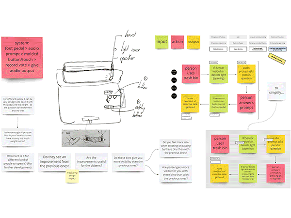
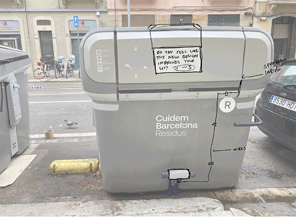
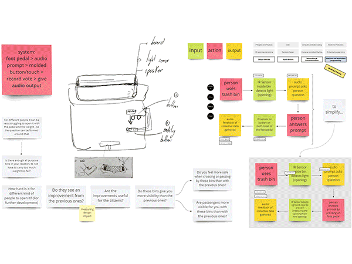
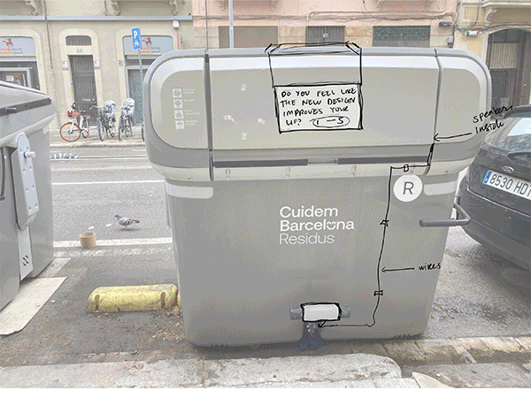

🗓 2 February 2022
Borka and I had previously had worked with co-designing interventions with children and parents in the Superilla. Our interests were in understanding how design in urban areas affect citizens and the desire for citizens to become more involved within the designing process of their own neighborhoods. This garbage bin gave a good opportunity to survey and understand how this new implementation was or wasn't affecting the people who are using it on a daily basis. We also discussed to make it more "ethical", that the data we collect (in this case, a simple yes or no question) would not only be "collected" by the designers to use, but also reflected back to the citizens who were participating in the voting.
So in summary, we aimed to create a device that could easily capture and reflect the opinions of citizens using a designed object. Which may help the designer or urban government understand and make improvements based on public user feedback.

In terms of implementation, we knew people would not want to touch the garbage bin, so we decided to eliminate the option of capacitive sensors. We also knew people wouldn't want to spend more time than necessary in front of the bins or while throwing out trash, so we eliminated the IR sensors. I helped concept the user experience and how the voting system will be triggered (with the initial press of the pedal to throw away the garbage). My main goal was to make the process as seamless and quick as possible and integrating the process of voting with the process of throwing away trash.
To make the voting as easy as possible, we decided to place the voting mechanism (yes and no buttons) on the pedals in which the citizen "user" would already be using to throw away the garbage. We had mixed opinions on the initial prompt, but I liked the idea that the bin would be minimally affected on the outside and the question would be triggered by voice when the citizen steps on the pedal. Ultimately we all agreed on the voice activation and thought it would be more spontaneous and fun in the end. I came up with a sketch for the pedal buttons, which would case the pedal on both sides (left and right) while fitting onto the sides of the pedal.

I tried following the coding of the Raspberry Pi (with Pietro's help), and was able to follow the logic but the coding language got very advanced very quickly. Since Anna had prior experience with the Python language, she mostly worked on the coding with Pietro. I helped wiring the cables, and making sure the electronics were correctly placed in the bread board. Roberto and I created the script for the survey and recorded it on the comptuer. I edited the clips to make them flow better and exported individual mp3 files for the RP. We made the decision to make the script sound friendly and approachable and indtead of saying
See our Miro board here
See our project repository here.
Key Lessons Learned:
MicroChallenge Three
Borka, Anna, Roberto and I got together in this challenge to create something that speaks to "ethical" design. We innitially discussed the idea of doing something in the public urban space, on the topic of urban development or the contrast between the old and new in Poblenou neighborhood. Once we went out to explore these topics, we immediately started discussing about the new garbage bins that were placed in Poblenou in the past few weeks. And if we each had noticed them, if they were even better, how they were different, etc. So we decided to pick the garbage bins as a gateway to speak about public design.Borka and I had previously had worked with co-designing interventions with children and parents in the Superilla. Our interests were in understanding how design in urban areas affect citizens and the desire for citizens to become more involved within the designing process of their own neighborhoods. This garbage bin gave a good opportunity to survey and understand how this new implementation was or wasn't affecting the people who are using it on a daily basis. We also discussed to make it more "ethical", that the data we collect (in this case, a simple yes or no question) would not only be "collected" by the designers to use, but also reflected back to the citizens who were participating in the voting.
So in summary, we aimed to create a device that could easily capture and reflect the opinions of citizens using a designed object. Which may help the designer or urban government understand and make improvements based on public user feedback.

In terms of implementation, we knew people would not want to touch the garbage bin, so we decided to eliminate the option of capacitive sensors. We also knew people wouldn't want to spend more time than necessary in front of the bins or while throwing out trash, so we eliminated the IR sensors. I helped concept the user experience and how the voting system will be triggered (with the initial press of the pedal to throw away the garbage). My main goal was to make the process as seamless and quick as possible and integrating the process of voting with the process of throwing away trash.
To make the voting as easy as possible, we decided to place the voting mechanism (yes and no buttons) on the pedals in which the citizen "user" would already be using to throw away the garbage. We had mixed opinions on the initial prompt, but I liked the idea that the bin would be minimally affected on the outside and the question would be triggered by voice when the citizen steps on the pedal. Ultimately we all agreed on the voice activation and thought it would be more spontaneous and fun in the end. I came up with a sketch for the pedal buttons, which would case the pedal on both sides (left and right) while fitting onto the sides of the pedal.

I tried following the coding of the Raspberry Pi (with Pietro's help), and was able to follow the logic but the coding language got very advanced very quickly. Since Anna had prior experience with the Python language, she mostly worked on the coding with Pietro. I helped wiring the cables, and making sure the electronics were correctly placed in the bread board. Roberto and I created the script for the survey and recorded it on the comptuer. I edited the clips to make them flow better and exported individual mp3 files for the RP. We made the decision to make the script sound friendly and approachable and indtead of saying
See our Miro board here
See our project repository here.
Key Lessons Learned: